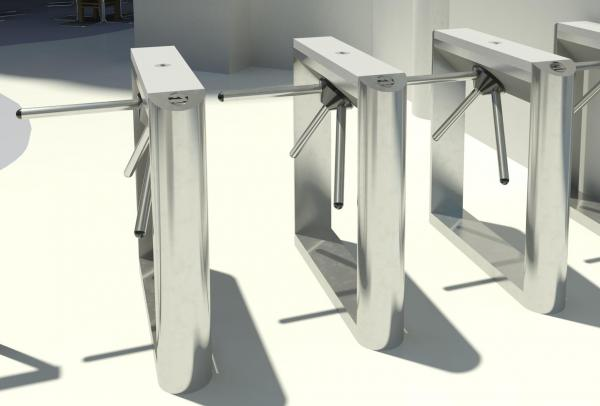

Obrtna vrata rade tako da imaju dva moguća stanja,a to su da vrata mogu biti ili otvorena odnosno mogu se pokrenuti ili zatvorena odnosno zaključana i ne mogu se pokrenuti. Promjena stanja postiže se putem ubacivanja novčića. Kada su vrata u zaključanom stanju mogu se dogoditi još dva moguća stanja. Jedno od stanja je otvaranje vrata bez ubacivanja novčića prilikom čega će automat vrata ostaviti u zaključanom stanju te osobi neće dopustiti prolaz. Drugo stanje prilikom zaključanih vrata je da osoba ubaci novčić prilikom čega će vrata(automat) prijeći u stanje otvorenih vrata te dopustiti prolaz osobi. U otvorenom stanju također su moguća još dva stanja. Jedno od tih stanja je da osoba ponovno ubaci novčić prilikom čega automat neće napraviti ništa te će i dalje ostati u otvorenom stanju, a drugo stanje je da osoba nakon što ubaci novčić i prođe kroz vrata. Tada automat ponovno prelazi u stanje zatvorenih i zaključanih vrata nakon čega čeka ponovno ubacivanje novčića. 